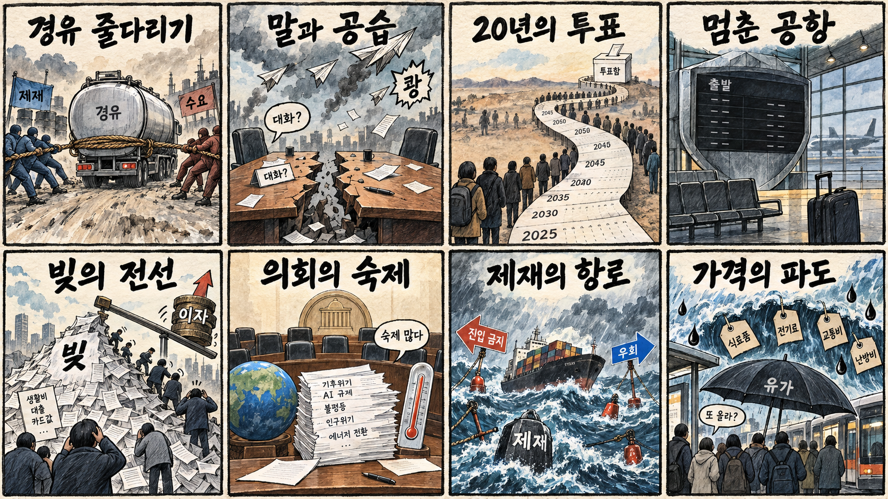
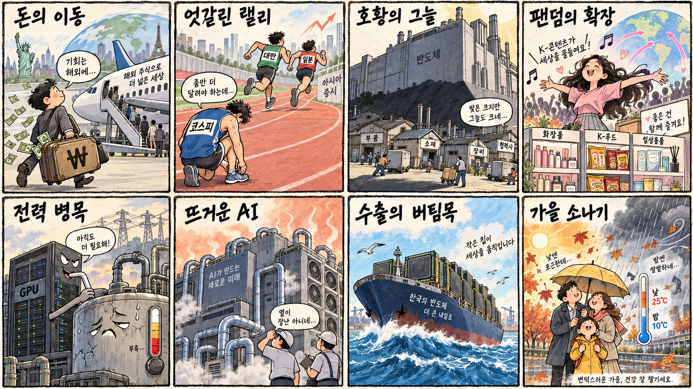

01
팔란티어 · 201.48→209.05달러 · +3.76%
내용요약 시가 대비 +3.97%로 조사 종목 중 가장 강한 반등을 보였습니다.
예상여파 소프트웨어 위험선호 회복에는 우호적이나 높은 변동성과 밸류에이션 부담을 함께 봐야 합니다.
MORNING_BRIEFING_20261011
작성 시각: 2026-10-11 06:36 KST · 직전 미국 정규장과 2026-10-11 KST 당일 공개 기사 기준
직전 미국 정규장인 10월 9일 뉴욕증시는 다우 +0.83%, S&P 500 +0.59%, 나스닥 +0.64%로 반등했습니다. 실적 시즌 기대가 위험선호를 지지했지만 인공지능 반도체는 상대적으로 약했습니다. 한국 증시는 일요일 휴장으로 즉시 반영되지 않으며 다음 개장일에는 휴장 중 누적된 기술주·반도체 흐름과 러시아산 경유 공급을 둘러싼 미국·유럽 갈등을 함께 확인해야 합니다.
| 지수 | 종가 | 등락률 | 한국 증시 시사점 |
|---|---|---|---|
| 다우존스 | 51,654.95 | +0.83% | 실적 기대의 위험선호 회복은 다음 개장일 심리에 긍정적 |
| S&P 500 | 7,811.54 | +0.59% | 실적 기대의 위험선호 회복은 다음 개장일 심리에 긍정적 |
| 나스닥 종합 | 27,366.17 | +0.64% | 기술주 반등은 국내 성장주 심리에 우호적이나 AI 반도체 약세는 선별 부담 |
다우 +0.83%, S&P 500 +0.59%, 나스닥 +0.64%로 마감했습니다.
칩 임대료와 냉각·전력 수요가 함께 오르며 인프라 비용이 부각됐습니다.
당일 시가 진입 검증이 불가능해 공식 추천 없이 현금 관망합니다.
개인은 하반기 국내 주식을 팔고 미국 주식 매수를 늘렸다는 보도가 나왔습니다.
10월 10일 보고서는 토요일 국내 증시 휴장으로 공식 추천을 내지 않았습니다. 게시 당시 판단을 유지하며 사후 종목을 추가하지 않습니다.
| 시장 | 종가 | 등락률 | 기준 |
|---|---|---|---|
| KOSPI | 6,625.93 | -2.62% | 최근 거래일 10월 8일 · 시가 대비 -2.68% |
| KOSDAQ | 892.27 | -0.69% | 최근 거래일 10월 8일 · 시가 대비 -0.66% |
| 다우존스 | 51,654.95 | +0.83% | 미국 10월 9일 정규장 |
| S&P 500 | 7,811.54 | +0.59% | 미국 10월 9일 정규장 |
| 나스닥 종합 | 27,366.17 | +0.64% | 미국 10월 9일 정규장 |
팔란티어는 시가 대비 +3.97%, 오라클은 +3.44%로 반등했습니다.
크라우드스트라이크 +2.63%, 아마존 +2.39%로 기술주 반등을 이끌었습니다.
슈퍼마이크로 -3.49%, 인텔 -3.40%, AMD -2.79%로 약했습니다.
마이크론 -2.23%, 어플라이드머티리얼즈 -2.19%, 엔비디아 -1.96%였습니다.
내용요약 시가 대비 +3.97%로 조사 종목 중 가장 강한 반등을 보였습니다.
예상여파 소프트웨어 위험선호 회복에는 우호적이나 높은 변동성과 밸류에이션 부담을 함께 봐야 합니다.
내용요약 시가 대비 +3.44%로 전날 급락 뒤 반등했습니다.
예상여파 인공지능 투자 수익성 우려가 완화되는 신호지만 하루 반등만으로 추세 전환을 단정하기 어렵습니다.
내용요약 시가 대비 -3.49%로 서버·인공지능 하드웨어 약세가 이어졌습니다.
예상여파 국내 서버 부품주 투자심리에 부담이 될 수 있어 수주와 마진 확인이 중요합니다.
내용요약 시가 대비 -3.40%로 조사한 반도체 종목 중 큰 폭으로 하락했습니다.
예상여파 미국 반도체 반등이 업종 전반으로 확산되지 않았음을 보여줘 국내 종목별 선별이 필요합니다.
내용요약 시가 대비 -2.79%로 인공지능 반도체 약세 흐름을 보였습니다.
예상여파 국내 HBM·패키징 기대에도 단기 심리 부담이 될 수 있으며 실제 고객 주문과 제품 경쟁력을 봐야 합니다.
일요일 국내 증시는 휴장입니다. 미국 3대 지수 반등은 다음 개장일 위험선호에 우호적이지만 인공지능 반도체의 상대 약세와 국내 개인자금의 해외 이동은 추격 매수를 경계하게 합니다. 미국·러시아 경유 공급 구상에 대한 유럽의 반발이 유가와 환율을 어떻게 움직이는지도 월요일 개장 전 재확인해야 합니다.
오늘은 추천 없음 — 현금 관망
일요일 국내 증시 휴장으로 당일 시가 진입, 호가 유동성 및 장중 수급을 검증할 수 없습니다. 종합점수 75점·상승확률 60%·예상 손익비 1.5를 동시에 검증할 수 없어 공식 후보를 제시하지 않습니다.
관심 연결종목 데이터센터 냉각·전력, 반도체 소재와 소비재 수출은 다음 개장일 관찰 대상일 뿐 매수 추천이 아닙니다. 휴장 중 누적 뉴스로 예상 갭이 커질 수 있으므로 추격매수하지 않습니다.
월요일 시가 갭과 외국인 선물 방향을 개장 전에 다시 확인합니다.
지수 반등이 기업 실적과 전망으로 이어지는지 봅니다.
칩 임대료, 냉각과 전력비 상승이 기업 마진에 미치는 영향을 봅니다.
대러 제재 갈등과 리야드 공항 차질이 유가·물류에 미치는 영향을 점검합니다.
핵심 요약: 인공지능 경쟁의 병목이 칩 자체에서 임대료·냉각·전력·보안으로 넓어졌습니다. 대형 칩 기업의 스타트업 투자와 현장 데이터를 활용한 피지컬 인공지능도 이어져, 기술 성능뿐 아니라 인프라 비용과 실제 생산성을 함께 봐야 합니다.
내용요약 일본 기업들이 인공지능 데이터센터 투자 확대에 따라 그래픽처리장치뿐 아니라 소재와 냉각 설비 수요까지 흡수하고 있다는 당일 보도입니다.
예상여파 인공지능 설비투자의 수혜 범위가 부품·열관리로 넓어질 수 있으나 실제 수주와 증설 속도를 확인해야 합니다.
내용요약 인공지능 칩 임대 가격이 1년 새 60% 올랐고 대형 모델 서비스도 연산 부족에 따른 장애를 겪었다는 당일 보도입니다.
예상여파 연산비 상승은 모델 사업자의 마진 부담을 키우는 반면 데이터센터·가속기·냉각 투자의 지속성을 뒷받침할 수 있습니다.
내용요약 엔비디아가 인공지능 스타트업 리플렉션에 추가 투자하거나 인수를 논의 중이라는 외신 인용 당일 보도입니다.
예상여파 대형 칩 기업의 소프트웨어·모델 확장 경쟁이 빨라질 수 있으나 협상 결과와 기업가치 조건이 핵심입니다.
내용요약 롯데가 현장 데이터를 로봇 학습 자산으로 전환해 피지컬 인공지능 역량을 강화한다는 당일 보도입니다.
예상여파 유통·물류 현장의 독점 데이터가 자동화 경쟁력이 될 수 있지만 반복 가능한 생산성 개선과 안전 검증이 필요합니다.
내용요약 5대 은행의 정보보호 투자 가운데 인공지능 보안 비중이 10%를 밑돈다는 당일 보도입니다.
예상여파 금융권의 인공지능 위협 대응 투자가 확대될 여지가 있으나 예산 증가가 탐지 성능과 사고 감소로 이어져야 합니다.
핵심 요약: 러시아산 경유 공급 구상을 둘러싸고 미국과 유럽의 제재 공조가 흔들렸고, 우크라이나에서는 외교적 언사와 공습이 엇갈렸습니다. 팔레스타인 선거 계획과 리야드 공항 공격은 정치 정상화 기대와 중동 물류 위험을 동시에 드러냈습니다.
내용요약 미국과 러시아의 경유 공급 구상에 유럽연합이 제재 완화는 전쟁 자금을 보탤 수 있다며 반발했다는 당일 보도입니다.
예상여파 연료 공급 안정과 대러 제재 공조가 충돌하면서 유가·운송비와 대서양 동맹의 정책 변동성이 커질 수 있습니다.
내용요약 러시아 대통령이 미국의 우크라이나 긴장 완화 구상에 이해를 표시했지만 공습은 계속됐다는 당일 보도입니다.
예상여파 외교적 신호와 전장 현실의 간극이 커 휴전 기대를 성급히 가격에 반영하기 어렵습니다.
내용요약 미국 대통령이 우크라이나 지도부를 비판하며 새 대통령이 필요하다고 언급했다는 당일 보도입니다.
예상여파 미국과 우크라이나의 정치적 균열은 군사 지원과 협상 구도에 불확실성을 더할 수 있습니다.
내용요약 20년 동안 총선을 치르지 못한 팔레스타인이 2027년 9월 대선과 총선을 함께 실시할 계획이라는 당일 보도입니다.
예상여파 선거 준비와 세력 간 합의가 진전되면 대표성 회복의 계기가 될 수 있으나 안보와 행정 여건이 변수입니다.
내용요약 리야드 공항이 공격을 받아 운영 중단과 항공편 취소가 이어졌다는 당일 보도입니다.
예상여파 중동 항공·물류 차질과 위험 프리미엄이 확대될 수 있어 운항 재개와 추가 공격 여부를 지켜봐야 합니다.

핵심 요약: 개인자금의 미국 주식 이동과 코스피의 상대 부진이 국내 수급 과제를 보여줬습니다. 반도체 호황의 중소기업 확산은 더뎠지만 케이팝 팬덤의 소비재 확장은 새 수출 경로로 주목되며, 연휴 마지막 날에는 큰 일교차와 소나기에 유의해야 합니다.
내용요약 개인투자자가 하반기 국내 주식 5조5000억원을 팔고 미국 주식은 10조원가량 순매수했다는 당일 보도입니다.
예상여파 국내 수급의 개인 공백과 해외 투자 확대가 이어지면 증권사 거래 구조와 원화 수요에도 영향을 줄 수 있습니다.
내용요약 대만과 일본 증시가 강하게 오른 동안 코스피 상승은 제한돼 인공지능 랠리에서 소외됐다는 당일 분석입니다.
예상여파 한국 시장의 할인 해소에는 반도체 실적뿐 아니라 외국인 수급, 환율과 기업 이익의 확산이 필요합니다.
내용요약 반도체 업황 호조에도 중소기업의 생산과 수출 비중은 줄어 양극화가 나타났다는 당일 보도입니다.
예상여파 대형사 호황이 장비·소재 중소기업의 주문과 현금흐름으로 확산되는지 정책과 실적에서 확인해야 합니다.
내용요약 케이팝으로 형성한 해외 팬덤을 한국 화장품과 식품 소비로 넓히려는 유통 전략을 다룬 당일 보도입니다.
예상여파 콘텐츠 수출이 소비재 반복 구매로 연결되면 중소 브랜드의 해외 진출 통로가 넓어질 수 있습니다.
내용요약 연휴 마지막 날 전국 곳곳에 소나기가 내리고 아침 최저기온은 10도까지 내려간다는 당일 예보입니다.
예상여파 큰 일교차와 돌발 강수로 이동·야외 일정에 불편이 예상돼 우산과 건강 관리가 필요합니다.
